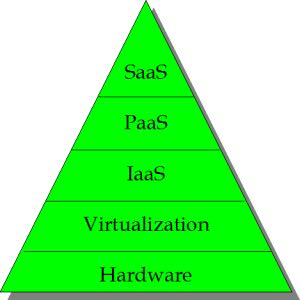

NoSQL数据库笔谈
OLAP报表产品最大的难点在哪里？
目前报表工具最大的难点不在于报表的样式（如斜线等），样式虽较繁琐但并非本质困难。最根本的难点在于业务 部门知道报表代表的真正含义，却不知道报表的数据统计模型模型；而IT部门通过理解业务部门的描述，在数据库端进行设置数据统计模型，却对报表本身所代表 的价值很难理解。
基于磁盘的和内存中的实现
NOSQL 实现分为基于文件的方法和内存中的方法。有些实现提供了混合模型，将内存和磁盘结合使用。两类方法的最主要区别在于每 GB 成本和读写性能。最近，斯坦福的一项称为“The Case for RAMCloud”的调查，对磁盘和内存两种方法给出了一些性能和成本方面的有趣的比较。总体上说，成本也是性能的一个函数。对于较低性能的实现，磁盘方案的成本远低于基于内存的方法，而对于高性能需求的场合，内存方案则更加廉价。
内存云的显而易见的缺点就是单位容量的高成本和高能耗。对于这些指标，内存云会比纯粹的磁盘系统差50到100 倍，比使用闪存的系统差5-10倍（典型配置情况和指标参见参考文献[1]）。内存云同时还比基于磁盘和闪存的系统需要更多的机房面积。这样，如果一个应 用需要存储大量的廉价数据，不需要高速访问，那么，内存云将不是最佳选择。
然而，对于高吞吐量需求的应用，内存云将更有竞争力。当 使用每次操作的成本和能量作为衡量因素的时候，内存云的效率是传统硬盘系统的 100 到 1000 倍，是闪存系统的 5-10 倍。因此，对于高吞吐量需求的系统来说，内存云不仅提供了高性能，也提供了高能源效率。同时，如果使用 DRAM 芯片提供的低功耗模式，也可以降低内存云的功耗，特别是在系统空闲的时候。此外，内存云还有一些缺点，一些内存云无法支持需要将数据在 多个数据中心之间进行数据复制。对于这些环境，更新的时延将主要取决于数据中心间数据传输的时间消耗，这就丧失了内存云的时延方面的优势。此外，跨数据中 心的数据复制会让内存云数据一致性更能难保证。不过，内存云仍然可以在夸数据中心的情况下提供低时延的读访问。
云计算架构

作者认为，金字塔概念最能说明每一层的大小，它也表达了每 个层是依赖前层的消息传递。在概念上，硬件是基础和广泛层。SaaS层是顶峰，也是最轻层。这种观点是来自于将购买SaaS的的最终用户角度。对于一个非常大的企业内部，PaaS平台层将是顶峰。使用内部开发的软件的内部各部门将实现他们的顶峰SaaS。还要注意：大小和层位置并不一定等同于重要性。硬件层可能是最重要的，因为它是所有超过一定点的商品。